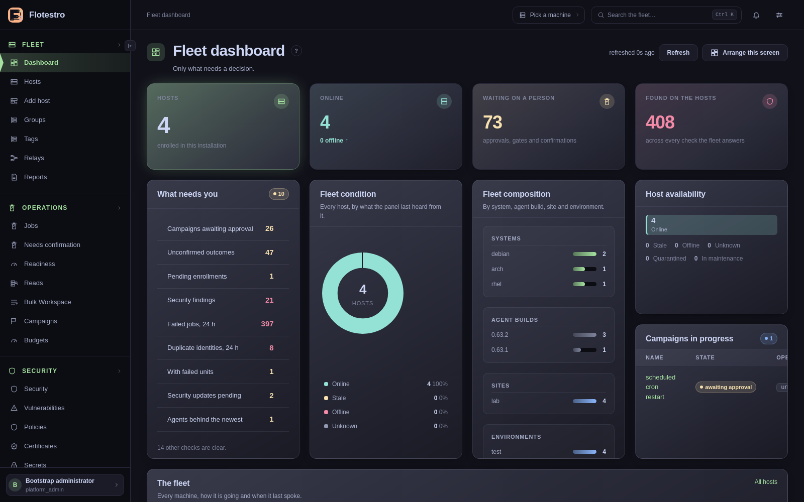
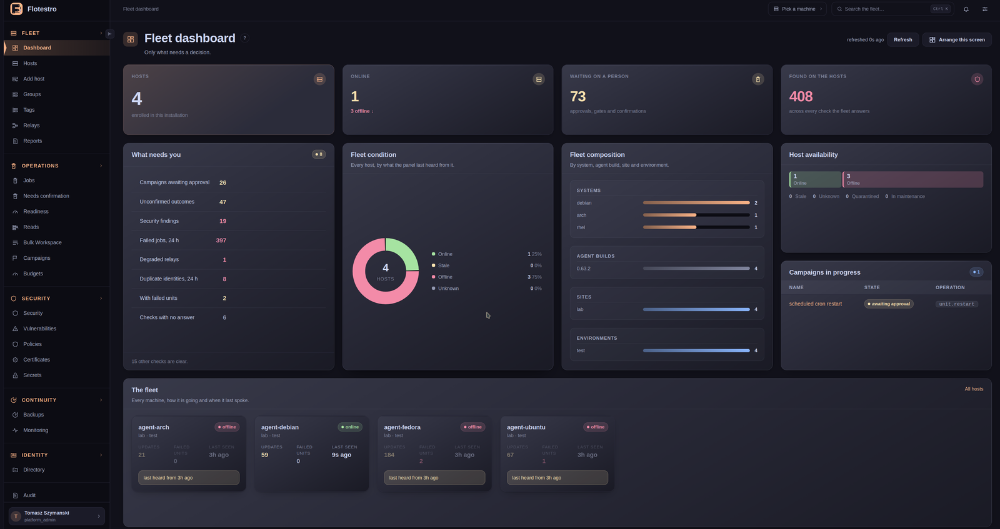
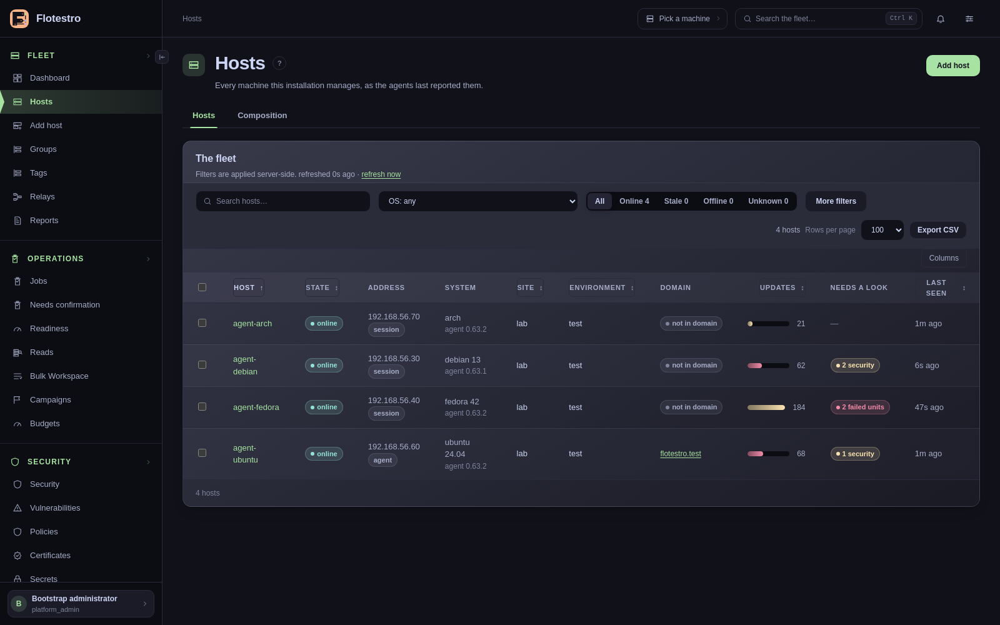
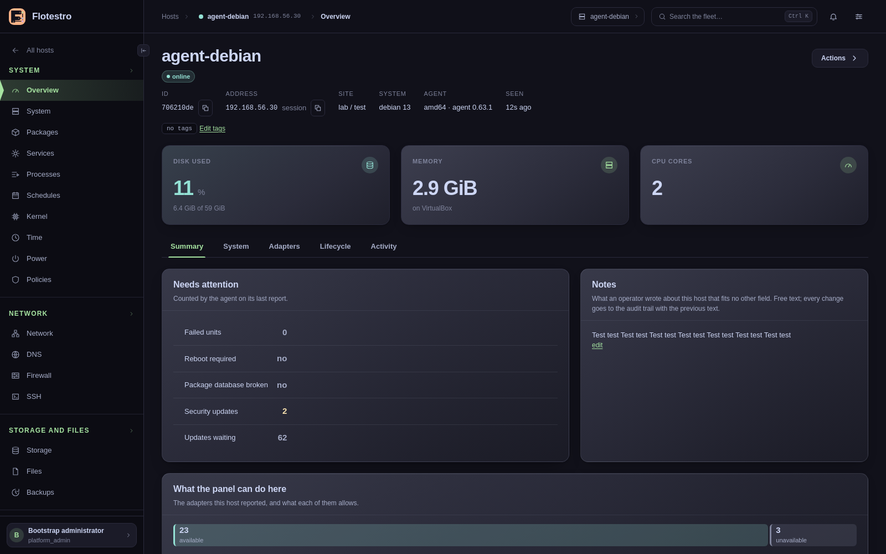
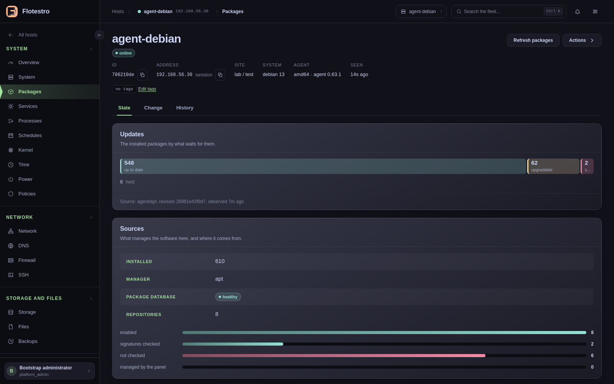
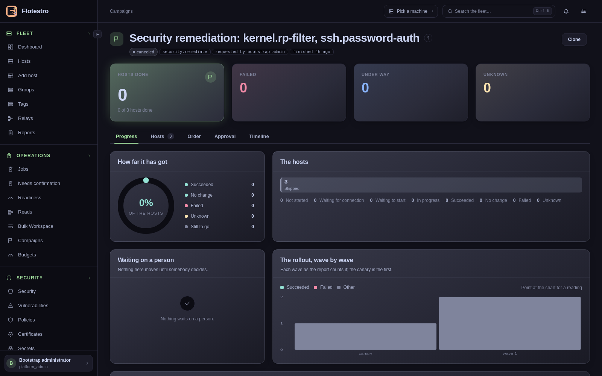
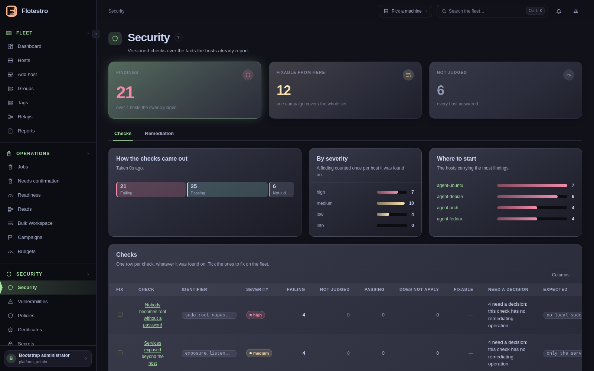
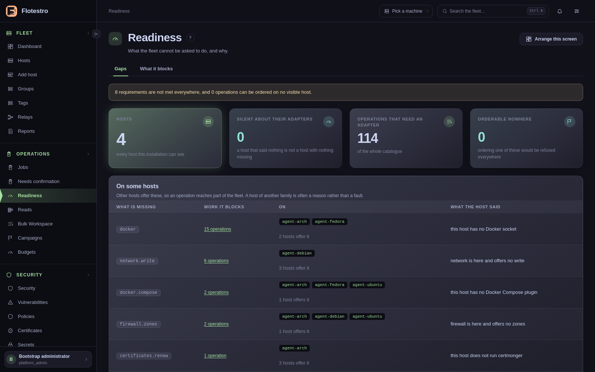
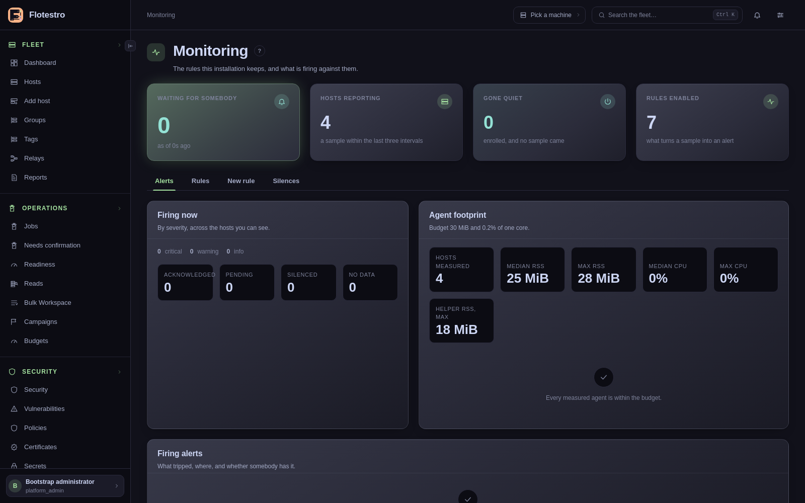
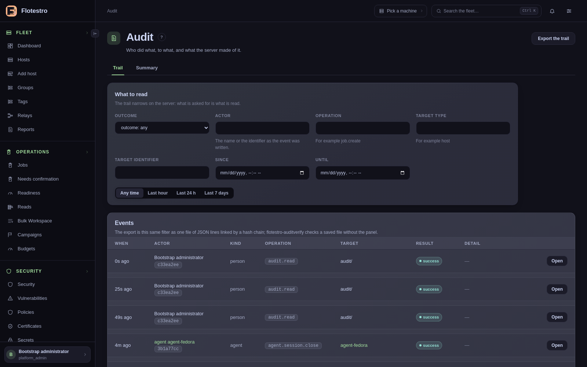

Osiem ekranów działającej instalacji. Strona główna mówi, czego produkt się trzyma; ta pokazuje, jak to wygląda w przeglądarce.
Każdy obrazek poniżej pochodzi z działającej instalacji: czterohostowego
laboratorium z jedną maszyną Debian, jedną Ubuntu, jedną Fedora i jedną Arch, stąd małe
liczby. Chodzi o to, co robią te strony, a nie o rozmiar floty.
Flota

Dashboard. Tylko to, co wymaga decyzji. U góry cztery liczniki —
ile hostów jest wdrożonych, ile odpowiada, co czeka na człowieka i co znalazły kontrole
— a pod nimi sama kolejka: kampanie czekające na zatwierdzenie, wyniki, których
nikt nie potwierdził, znaleziska bezpieczeństwa, hosty z nieudanymi jednostkami. Niżej
skład floty według systemu, wersji agenta, site’u i środowiska, niepowodzenia z
ostatniej doby wraz z hostem, do którego należą, i kampanie wciąż w biegu. Liczba,
której nikt nie zdołał ustalić, jest myślnikiem, nigdy zerem.

Ten sam dashboard, w akcencie wybranym przez czytającego. Tutaj
pomarańczowy, u kogoś innego zielony lub niebieski; akcent barwi aktywne miejsce,
etykiety i podświetlony kafel, a nic, co oznacza stan. Ten zrzut powstał, gdy trzy z
czterech hostów laboratorium się restartowały, tak wygląda zła godzina: jeden online,
trzy offline, a każdy offline niesie last heard from 3h ago. Host, który przestał
mówić, jest narysowany jako taki, który przestał, nigdy jako taki, który jest w
porządku.

Hosty. Dwadzieścia trzy filtry, każdy zawężający po stronie serwera i każdy
zapisany w adresie, więc odnośnik do „wszystkich debianów w labie czekających na
restart” otwiera się dokładnie na tym. Wiersz niesie stan, adres i to, skąd panel
go zna, system tak, jak zgłosił go host, site i środowisko, przynależność do domeny,
liczbę czekających aktualizacji i moment ostatniego kontaktu. Nagłówek sortuje listę,
wybór kolumn ją zwęża, a przeglądarka pamięta, co zostało zwinięte.
Pojedynczy host

Przegląd hosta. Szyna staje się modułami tego hosta: pakiety, usługi,
procesy, harmonogramy, jądro, czas, zasilanie, sieć, DNS, firewall, SSH, pamięć masowa,
pliki, kopie zapasowe, kontenery, Compose, polityki, bezpieczeństwo, podatności,
certyfikaty, konta, tożsamość, zadania, audyt. Każdy kontener mówi, skąd ma swoje fakty
i kiedy — adapter, rewizja, jak dawno obserwowane. Spośród adapterów, które ten
host zgłasza, część potrafi czytać i zmieniać, część tylko czytać, a część jest
niedostępna wraz z powodem podanym przez samego hosta, co jest inną odpowiedzią niż
zero.

Pakiety hosta. Tutaj maszyna z Debianem: 548 pakietów aktualnych, 62 do
aktualizacji, w tym dwie bezpieczeństwa, zero wstrzymanych. Pod spodem to, co zarządza
oprogramowaniem i skąd ono pochodzi — 610 zainstalowanych przez apt,
zdrowa baza pakietów, osiem repozytoriów, z czego dwa mają sprawdzane podpisy, a sześć
nie, co strona mówi na czerwono zamiast to zaokrąglać. Zakładka Change pozwala
zaplanować aktualizacje, co niczego na hoście nie zmienia, albo zainstalować, wstrzymać,
zdjąć wstrzymanie i zaplanować usunięcie. Zwykłe aktualizacje nie ruszają agenta: jego
wymiana to osobna operacja i liczy się za wykonaną dopiero wtedy, gdy host wróci,
meldując wersję, o którą poproszono.
Zmiana w całej flocie

Kampania. Remediacja bezpieczeństwa na trzech hostach, anulowana zanim
cokolwiek zmieniła — więc przy każdym hoście stoi pominięty, a każdy
licznik pokazuje zero, co jest prawdą o kampanii, którą zatrzymano. Canary to pierwsza
fala i tak jest rysowana; obok fal stoi to, co czeka na człowieka, jak daleko doszedł
rozruch i pełny stan każdego hosta, który kampania wybrała. Zapis tego, kto ją zlecił,
kto zatwierdził i dlaczego, powstaje raz i nigdy się nie zmienia.
Co panel obserwuje

Bezpieczeństwo. Wersjonowane kontrole oceniane w panelu na faktach, które
hosty i tak zgłaszają: 21 znalezisk na czterech hostach, 25 zaliczonych, 6 takich, na
które żaden host nie odpowiedział, i 12 takich, które panel potrafi naprawić stąd jedną
kampanią. Każdy wiersz nazywa kontrolę i jej identyfikator —
sudo.root_nopasswd, exposure.listening — wagę, wartość,
wobec której oceniano, a tam, gdzie kontrola nie ma operacji naprawczej, mówi to wprost,
zamiast oferować naprawę, której nie ma. Jedno złe ustawienie na stu hostach to jeden
problem.

Gotowość. Czego flocie nie da się zlecić, zanim ktokolwiek zleci. Osiem
wymagań nie jest spełnionych wszędzie, a żadnej operacji nie brakuje adresata
całkowicie; żaden host nie milczy o swoich adapterach, co ma znaczenie, bo host, który
nic nie powiedział, to nie host, któremu niczego nie brakuje. Przy każdym adapterze,
którego host nie oferuje, powód jego własnymi słowami — this host has no Docker
socket, network is here and offers no write, this host does not run
certmonger — i operacje, które ten powód blokuje. Host z innej rodziny to
powód, nie wada, i strona mówi, które jest które, zamiast liczyć lukę jako zero.

Monitoring. Każdy agent próbkuje swój host; reguły z tej strony zamieniają
próbki w alerty i nic nie odpali bez reguły, którą operator może tu przeczytać. Najpierw
pokrycie — ile hostów zgłasza dane, ile zamilkło, ile reguł jest włączonych —
a potem same reguły, każda z metryką, progiem, czasem, przez jaki musi się utrzymać, i
zasięgiem hostów. Nie ma drugiego systemu do zainstalowania ani eksportera do
utrzymywania.

Audyt. Każde powodzenie i niepowodzenie tworzy zdarzenie; każda odmowa
również. Ślad zawęża się po stronie serwera — wynik, aktor, operacja, cel, okno
czasu — więc czytane jest dokładnie to, o co poproszono. Wiersz niesie czas,
aktora, rodzaj, operację, cel i wynik, a pod nazwą użytkownika sesję i sposób
uwierzytelnienia, na którym żądanie się opierało. To, na czym opierało się
zatwierdzenie, i pola, które zmiana ruszyła, stoją pod wierszem, bez pytania.